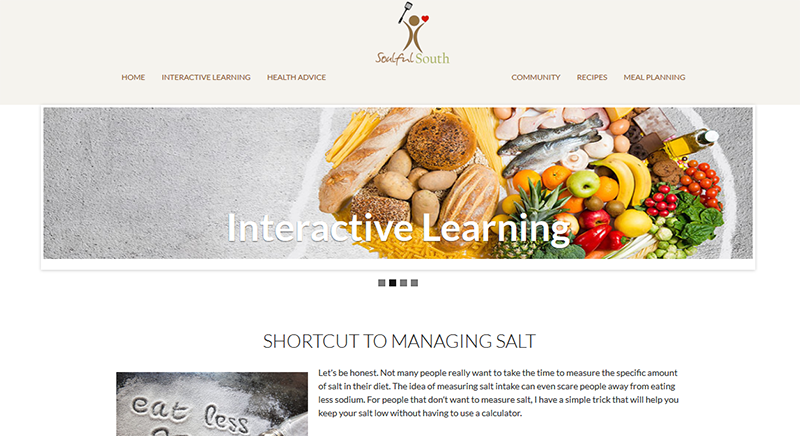

This project was built to help make cardiovascular disease information accessible to southerners. This website takes the medically-researched Mediterranean Diet and adapts it to the North and South Carolinaian taste. Carolina Heart Health Initiative provides users with 70+ healthy recipes, various health articles, quizzes, and videos. This was a joint project between myself and a UNC medical student.
My partner was tasked with the development of the content, photography, and recipe execution. I was tasked with taking the project needs and morphing them into a usable website that would support users on their health journey.
Throughout this project, my partner and I focused on the following characteristics of flow theory to inform our design decisions:
The goal for this project was to create a simple resource that incorporated interactive elements in order to engage users and provide them with the information they need to take control of their health. The website's content had to be easy for users to find in order for them to gain something from their online experience. Users who may be accessing the website on mobile devices, such as tablets or smartphones were also considered.
With our usability testing, we wanted to determine was whether a patient-centered, topic-focused, region-specific website would be more usable to rural African American users in the southeast US than informative, but less usable websites. This was in contrast to existing health-focused websites, such as Heart.org.
Therefore, our goals included:After talking to medical professionals, talking to residents, and reviewing medical research with my partner, we determined which users we wanted to target:
For our usability test, we recruited 13 participants from Rocky Mount, NC. Participants were over the age of 18 and African-American and covered a variety of genders, ages, and education levels.
Each participant completed Pfizer's "Newest Vital Sign," a health literacy survey that gave us a baseline understanding of users' health knowledge.
Users were required to complete 5 tasks for the Heart.org website and 5 tasks for our website. This allowed us to compare each website and have a better understanding of how usable users found each website to be.
Below includes the tasks that they were required to complete:
| Tasks | CarolinaHeartHealth.org | Heart.org |
| Task 1 | Starting on the homepage, find and click on the article titled "Shortcut to Managing and Reducing Salt." How many teaspoons of salt or less should you try to eat per meal? | Starting on the "Getting Healthy" page, find and click on the article titled “About Sodium.” How many milligrams of sodium is recommended by the American Heart Association? |
| Task 2 | Starting on the homepage, find and click on the "Oven Roasted Chicken" recipe. How many calories are in a serving of "Oven Roasted Chicken?" | Starting on the "Getting Healthy" page, find and click on the recipe "Beef Sliders with Lettuce, Tomato and Cucumber."" How many calories are in a serving of this recipe? |
| Task 3 | Starting on the homepage, find and click on the "Shopping for Health" quiz. What is question 1 on the "Shopping for Health" quiz? | Starting on the "Getting Healthy" page, find and click on the "Healthy Eating" quiz.” What is question 1 on the "Healthy Eating" quiz? |
| Task 4 | Starting on the homepage, find the link to the heart disease support group. What is the name of the heart disease support group? | Starting on the "Homepage," find and click on the "FAQ from Caregivers" section. Who should you contact if the person you are bathing weighs over 200 pounds? |
| Task 5 | Starting on the homepage, find and click on the article titled “Shortcut to Managing and Reducing Salt.” How many milligrams of sodium are found in 1/4 tsp of salt? | Starting on the "Getting Healthy" page, find and click on the article titled "About Sodium."" How many milligrams of sodium are found in food products labeled "very low sodium?" |
I worked with my partner to breakdown exactly what content users needed to have access to in order to feel empowered about making a lifestyle change. We wanted to balance informative content with interactive elements to keep users engaged in the content.
For the interactive elements, we wanted to include social media features, videos, quizzes, and online courses. When a user found the website, it was important to be able to not only show them information, but also to engage them in that information and reinforce that information.
Based on the results of our usability testing, we determined several areas of improvement. We learned that many participants looked in incorrect sections when finding content on CarolinaHeartHealth.org. One example was that of completing Tasks 1 and 5, where participants would look in the "Meal Planning" section instead of the "Health Advice" section for the article. To resolve this, we clarified the relationship between those two sections and made the "Meal Planning" section a child of the "Health Advice" section.
After completing the above list of tasks, participants completed a survey that asked them to rate their overall preference for CarolinaHeartHealth.org or Heart.org based on ease of navigation, readbility, and relatability. The results of this survey indicated that the majority of users greatly preferred CarolinaHeartHealth.org. However, in terms of having confidence in the content, users preferred Heart.org.
Version 1 of Carolina Heart Health Initiative was used during the usability tests. At the time, the project was named "Soulful South."
During Version 2, we renamed the project to "Carolina Heart Health Initiative" in order to make the purpose of the project clearer.
The challenges in this project involved balancing the website's marketing with usability. Even after laying out the site mapping and revisting the navigation over and over again, we still found ourselves needing to make edits in order to account for the SEO. Although parent categories made sense, we would make slight changes to ensure that the website was properly indexed by search engines. I think that successfully balancing these two concepts is key.
After making changes to our initial prototype, we were able to go live with the new version of our project in January 2016. After that period of time, we saw a decrease in the percentage of bounce rates and an increase in the average duration session time for new visitors.